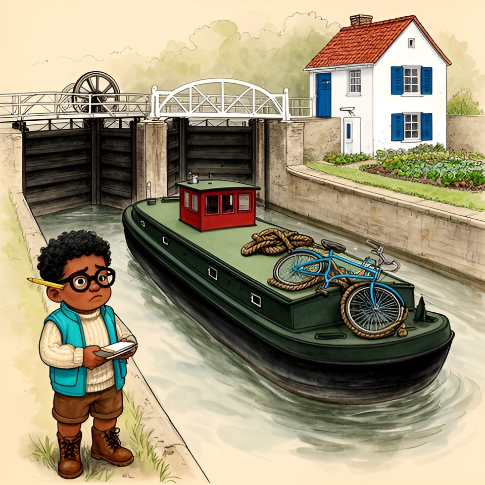

Titistoire › Les Comètes (6-8 ans)
Le vélo sur le toit
Une année à Virevent, l'histoire du mois de septembre : Jeanne, Gaspard, Suzie et Marin.

▶ Écouter et regarder l'histoire
Gratuit, sans inscription : la voix lit, le texte suit mot à mot, les images tournent comme dans un album.
Le texte de l'histoire
C'était le matin de la rentrée, et la Flânette fumait comme un bol de chocolat. Sur le quai de l'écluse, Gaspard compta les marches, les bouées, les canards. Tout y était. Rien n'avait bougé de l'été.
Soudain, une corne résonna. Une péniche verte, que personne ne connaissait, glissa entre les portes. L'éclusière empoigna la manivelle. « Douze tours, pas un de plus », murmura Gaspard, qui comptait avec sa mère.
Sur le toit de la péniche brillait la sonnette d'un vélo bleu, piqué de rouille, ficelé par trois gros nœuds. Trois ! Pour un vélo qui ne risquait pas de s'envoler.
Gaspard haussa les épaules. « En voilà un qui ne prend pas soin de ses affaires. » Il sortit son carnet, mouilla la mine de son crayon et nota : un vélo, trois nœuds, zéro bon sens.
Derrière la vitre de la timonerie, une silhouette immense le regardait, en ciré jaune. Gaspard referma son carnet d'un coup sec. Cette page-là, pourtant, il la rouvrirait.
Dans la cour, le cerisier avait gardé ses feuilles et perdu ses cerises. Gaspard n'eut pas le temps de les regretter : une tignasse rousse fonçait droit sur lui.
« Vous n'allez pas me croire ! claironna Jeanne. Cet été, j'ai vu la mer ! » Ses joues s'arrondirent comme devant un gâteau d'anniversaire. « Avec des vagues hautes comme le beffroi ! »
Gaspard rajusta ses lunettes. « Premièrement, c'était l'étang de ta tante. Deuxièmement… » — « Un étang archi-immense ! » Depuis toujours, Jeanne lui coupait la parole avant troisièmement. Depuis toujours, Gaspard faisait semblant d'en être fâché.
Suzie tortillait une boucle de ses cheveux de nuage. « Et elle était salée, ta mer ? » — « Salée, sucrée, tout ! » — « Oui, oui… » Suzie croyait volontiers ce qui faisait plaisir.
La cloche de l'école sonna huit heures. Cinq minutes après, le beffroi les sonna à son tour : l'horloge de Virevent prenait son temps, et personne ne le lui reprochait.
Monsieur Grison traversa la classe, et la poche de son gilet tinta, cling-cling, comme à chaque rentrée. Mais ce matin-là, quelqu'un le suivait. Quelqu'un de très grand, en ciré jaune.
« Voici Marin, annonça le maître. Il nous arrive par la rivière, le temps qu'on répare l'écluse d'aval. » Le nouveau se tenait sur une jambe, l'autre pied calé derrière le mollet, comme un héron. Gaspard reconnut la silhouette de la péniche.
Suzie, sans un mot, poussa sa trousse. Cela fit une place. Le nouveau s'y plia en trois. Déjà Jeanne agitait la main comme un drapeau. « D'où tu viens ? » — « De la mer. »
Jeanne se retourna tout entière sur son banc. « La vraie ? Elle est grande comment ? » Le nouveau réfléchit. « On ne voit pas l'autre bord. » Et il ne gonfla même pas les joues.
Jeanne en resta bouche bée. Gaspard, lui, contemplait le dos rouge de sa voisine. D'ordinaire, c'était vers lui qu'elle se tournait pour savoir si une chose était vraie.
À la récréation, Jeanne tourna autour du nouveau comme une guêpe autour d'une tartine. Les ports, les phares, les mouettes : elle voulait tout. Il répondait en trois mots, jamais quatre.
Sur le muret, Gaspard ouvrit son carnet à une page neuve. Chaque fois que Jeanne parlait au nouveau, un bâton à gauche. Chaque fois qu'elle lui parlait, à lui, un bâton à droite.
Quand la cloche sonna, il fit le total. Onze à gauche. Trois à droite. Et encore : dans les trois, il y avait « Pousse-toi, Gaspard, je ne vois rien ».
Ce n'était pas juste. Lui était d'ici depuis toujours ; il connaissait chaque pavé de Virevent. L'autre avait débarqué le matin même, avec un vélo rouillé et trois nœuds de trop.
Il fallait remettre les choses en ordre. Et pour cela, Gaspard ne connaissait qu'un seul moyen : gagner, devant témoin, à quelque chose qui se compte.
À quatre heures, Gaspard se planta devant le nouveau, le menton très haut. « Premièrement, tu as un vélo. Deuxièmement, moi aussi. Troisièmement… » Il s'arrêta, surpris d'être arrivé jusque-là. Personne ne l'avait interrompu.
« Troisièmement, une course. À cinq heures, sur le chemin de halage, de l'écluse au pont Bossu. » Le nouveau se remit sur une jambe. Il regarda ses chaussures, puis la rivière.
« Ça m'est égal. » Gaspard en demeura interdit. Il avait prévu un oui, il avait prévu un non, il avait même prévu des excuses. Il n'avait rien prévu contre « ça m'est égal ».
« Une course ! s'enflamma Jeanne, les joues comme deux pommes. Je donnerai le départ, avec un mouchoir ! Toute la ville viendra : trente personnes, non, trois cents ! Juré-craché-mouillé ! »
Le nouveau s'éloignait déjà vers le quai des Saules, à grands pas tranquilles. « Cinq heures ! » lança Gaspard dans son dos. Le ciré jaune ne se retourna pas.
À cinq heures moins dix, Gaspard attendait sur le chemin de halage, les pneus gonflés, les lacets noués deux fois. Jeanne arriva, son mouchoir au poing. Des trois cents personnes, il n'en vint aucune.
Le beffroi sonna cinq heures, c'est-à-dire cinq heures cinq. Le chemin resta vide. Un canard le traversa. « Un brochet a peut-être avalé son vélo, suggéra Jeanne. Un brochet énorme ! »
À cinq heures et quart, Gaspard descendit de selle. « Il n'est pas venu. Donc j'ai gagné. Par forfait. » Le mot était beau ; il sonnait creux.
« Gagner tout seul, c'est applaudir d'une seule main », répliqua Jeanne. Et elle fila : à la maison haute, les derniers arrivés raclaient le fond de la soupière.
Gaspard resta seul avec sa victoire. Elle ne pesait rien. Alors la colère lui monta aux lunettes : on ne répond pas « ça m'est égal » à quelqu'un qui a gonflé ses pneus ! Il fonça vers le quai des Saules.
La péniche verte somnolait sous les saules. Sur sa coque, un nom peint en blanc : L'Hirondelle. Gaspard freina net. Sur le toit, plus de vélo. Rien que des géraniums et une corde.
Le vélo bleu était à terre, et le nouveau était dessus. Enfin, presque. Gaspard se glissa derrière un saule pour répéter sa phrase : « Premièrement, tu as perdu. Deuxièmement… »
Il n'alla pas jusqu'à deuxièmement. Le grand ciré jaune poussait sur une pédale. Le vélo penchait à gauche, penchait à droite, s'arrêtait. Un pied par terre. Puis l'autre. Puis tout recommençait.
Gaspard compta malgré lui. Quatre essais. Sept. Douze. Le nouveau ne criait pas, ne trépignait pas. Il essuyait la sonnette du revers de sa manche et remontait en selle.
Il ne savait pas. Ce grand-là, qui avait vu la mer, ne savait pas faire de vélo. Une branche craqua sous la bottine de Gaspard.
Le nouveau tourna la tête. Il posa les deux pieds par terre ; ses jambes étaient si longues que ses genoux dépassaient le guidon. « Tu as gagné. Tu peux l'écrire. »
Gaspard sortit son carnet. C'était très exactement ce qu'il était venu chercher. Il mouilla son crayon. Le crayon resta en l'air. « Pourquoi tu ne me l'as pas avoué ? » — « Avoué quoi ? » — « Que tu ne sais pas. »
Marin haussa une épaule. « Sur un bateau, il n'y a pas de chemin. On apprend à nager. À faire des nœuds. Pas ça. » Il coucha le vélo dans l'herbe, doucement, comme on borde quelqu'un.
Puis il franchit la passerelle et disparut dans la timonerie. Gaspard resta planté sur le quai, avec une victoire dont il ne savait que faire.
Il aurait pu rentrer : il avait gagné deux fois dans la journée. Au lieu de quoi il posa un pied sur la passerelle, qui tanguait un peu, puis l'autre.
La timonerie sentait le café et la peinture. Marin lui tournait le dos. Ne sachant où poser les yeux, Gaspard les posa sur le chambranle de la porte.
Le bois était entaillé de petites encoches, alignées comme les bâtons de son carnet. Gaspard compta, bien entendu. Dix-sept. « Tu comptes quoi, toi ? » — « Les villes. Une encoche par ville. »
Dix-sept villes ! Gaspard, qui n'en connaissait qu'une, en eut le tournis. « Alors tu as des amis partout. » — « La première fois, on m'invite. La deuxième fois, on est repartis. »
Marin grattait la dernière encoche du bout de l'ongle. « Et toi, tu es ici depuis quand ? » — « Depuis toujours. » — « Toujours. » Il prononça le mot lentement, comme on fait fondre un berlingot.
« Ici, même les canards te connaissent. » Gaspard chercha un premièrement et n'en trouva pas. Personne, jamais, n'avait parlé de ses canards avec cette voix-là. Dehors, la Flânette clapotait.
Gaspard redescendit sur le quai et releva le vélo bleu. « Pourquoi trois nœuds ? » Marin regarda le toit, puis l'eau. « Pour qu'il soit encore là, le jour où il y aurait un chemin. »
Le chemin de halage s'étirait, large, plat, désert jusqu'au pont Bossu. Gaspard rangea son carnet et empoigna la selle à deux mains. « Monte. » — « Et ta course ? » — « Reportée. Monte. »
« Premièrement, tu regardes loin devant. Deuxièmement, tu pédales. » — « Et troisièmement ? » Gaspard cligna des yeux. C'était bien la première fois qu'on le lui réclamait. « Troisièmement, je tiens. »
Et il tint. Il courut derrière le vélo, cramponné à la selle, les lunettes de travers. Le vélo zigzaguait comme un caneton. Marin serrait le guidon à s'en blanchir les doigts.
Un aller, un retour. Encore un aller. Gaspard soufflait comme une forge. Il ne compta pas les tours. Il s'en aperçut vers le quatrième, et en fut bien étonné.
Le soleil descendait derrière les saules quand le vélo, soudain, fila droit. Gaspard sentit que la selle ne pesait plus rien dans ses mains. Alors, sans prévenir, il ouvrit les doigts.
« Tu tiens ? » cria Marin. — « Je tiens ! » répondit Gaspard, qui galopait à côté, les mains vides. Lui qui n'avait jamais menti, pas même d'un chiffre après la virgule.
« Menteur ! » Au bout du quai se dressait Jeanne, la soupe avalée, le mouchoir au vent, ravie comme un jour de foire. « Gaspard a menti ! Je l'ai vu, archi-vu ! »
Marin se retourna, comprit, vacilla, et s'arrêta des deux pieds. Vingt mètres plus loin. Vingt mètres tout seul. Lui qui parlait de la mer sans lever un sourcil, il en arrondit les yeux.
Gaspard, écarlate, essuyait ses lunettes. « Je n'ai pas menti. J'ai arrondi. » — « Tout le monde a gagné ! » — « Personne n'a gagné, Jeanne. On n'a pas couru. » Mais il ne sortit pas son carnet.
Le soir venait. Madame Bogue allumait les réverbères du quai, un à un. Sur le beffroi, la comète dorée de la girouette accrochait le dernier rayon.
« À demain, les Comètes ! » cria Jeanne en détalant. Gaspard soupira. « Une comète repasse tous les soixante-seize ans. Ce n'est pas une bande, c'est un rendez-vous manqué. »
Marin leva le nez vers la girouette. « Celle-là, elle reste. » Il ne remonta pas le vélo sur le toit. Il l'appuya contre un saule. Sur la péniche, la corde demeura seule, lovée comme un chat.
« Demain, je reviens », annonça Gaspard. Et quand Gaspard annonçait qu'il viendrait, il venait. Marin se remit sur une jambe. « Ça m'est égal. » Mais il ne rattacha rien.
Sous un réverbère, Gaspard rouvrit son carnet à la page du matin. Un vélo, trois nœuds, zéro bon sens. Il tourna cette page, puis celle des onze bâtons. La suivante était blanche.
Il la regarda un long moment. Il n'y écrivit rien. Derrière lui, sur le quai des Saules, un vélo bleu dormait dehors, sans une corde.